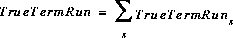

[Chapter Contents]
Fixed Combined Harvest Rate Algorithm
For any given stock, if one knows the total number of fish available for in-river harvest and the desired harvest rate, one also knows the desired escapement level. Setting TempNewScal = 1 and rearranging terms in eq (4.54) gives
 [4.55]
[4.55]
Thus, we first compute the combined true terminal run (i.e., the number of fish that actually enter the river) for the stocks under in-river management:
 [4.56]
where s indexes stocks under in-river management.
Next we compute the escapement goal that will produce the desired harvest rate goal:
EscGoal = TrueTermRun · MgtIDL · (1-HRGoal) [4.57]
Note that the MgtIDL is assumed constant for all stocks being managed under the fixed harvest rate policy in the river. Once the combined escapement goal is determined, the combined fixed escapement algorithm is implemented to determine in-river catches. Note that the harvest rate goal includes both legal catches and associated incidental mortalities.
End of Chapter 4. Theory
[Chapter Contents]